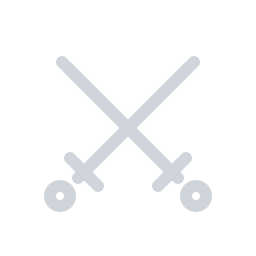

試合情報レイアウト刷新 — 新規既定候補2案 ＋ Classicリデザイン案
目的: トレース由来の見た目から脱却したオリジナルデザインへ。A/Bのどちらかを新規ユーザーの既定に、CはClassicの見た目差し替え（データ構造・設定はそのまま）。文言はあなたの実運用データを使用。
案A
Emberline
左アクセント帯 × 非対称フェード
ivy laurel Team Scrims
GUEST SCRIMS
ivy laurel Survivor
VS GAUGAU
DIF CASUAL Cup Vol.11 RULESET
1
Coal Tower （Killer Pick）
狙い: 「べた黒の四角が縦に並ぶ」構造そのものを捨て、左の発光アクセント帯＋右へ溶けるグラデ行でひと目で別物に。SET番号はひし形バッジ（パーク隠しカバーと同じモチーフ＝ブランドの一貫性）。ゲーム画面への圧迫感が最も少ない。
案B
Cutline
斜めカット × エスポーツ調
ivy laurel Team Scrims
GUEST SCRIMS
ivy laurel Survivor
VS GAUGAU
DIF CASUAL Cup Vol.11 RULESET
SET 1
Coal Tower （Killer Pick）
狙い: 大会配信で映える競技系。行末の斜めカット＋上辺ヘアライン＋左ボーダーで、フラットな長方形とは別系統に。SETは「SET 1」タブ＋本文の2トーン構造。スクリム/大会の空気に最も寄る。
案C
Classicリデザイン「Simple Stack」
互換維持・見た目のみ刷新

ivy laurel Team ScrimsGUEST SCRIMS
ivy laurel Survivor
VS GAUGAU
DIF CASUAL Cup Vol.11 RULESET
SET1: Coal Tower （Killer Pick）
狙い: 既存Classicの「縦積み構造」は維持したまま（今のルーム設定がそのまま映る）、角丸＋上面ハイライトのグラデボックス・下線付きタイトル・ピル型SET行・フォント刷新でトレースの痕跡を消す。▶は◆に置換。新規アイコン(左上)も反映。